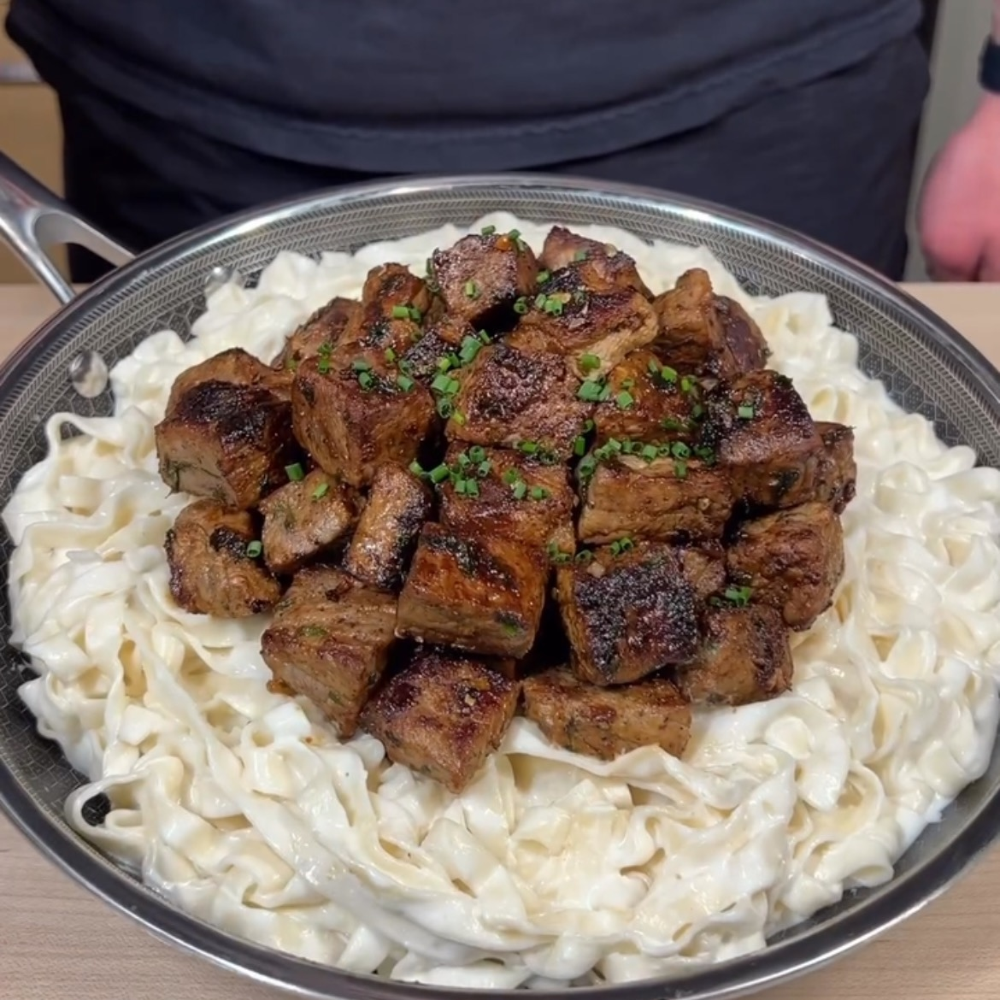

Alfredo de Bistec
Ingredientes:
*4 porciones
- 1 ½ tazas de queso cottage (0% grasa)
- ½ taza de queso parmesano rallado
- ½ taza de leche sin grasa
- 2 dientes de ajo
- 1 cda ajo picado
- Sal de ajo
- Pimienta negra
- 24 oz de carne magra
- 1 cda de mantequilla ligera
- Copos de perejil
- 8 oz de pasta de proteína (o pasta de tu elección)
- Cebollino fresco
Instrucciones:
- Licuar hasta que quede homogéneo los 2 quesos con 2 dientes de ajo, sal de ajo y la leche.
- Vertir mezcla en un bowl y cubrir la parte de arriba con papel film
- Cortar la carne en cubos con dimensiones de aprox 1 pulgada
- Transfiere la carne a un bowl y añade sal de ajo y pimienta negra. Mezcla todo bien
- Cocina la carne en una sartén caliente hasta que queden doraditos. Añade mantequilla, el ajo picado,
copos de perejil. Cocina por otros dos minutos hasta que termine cubierta la carne.
- Añadir a olla con agua caliente la pasta y cocinar hasta que esté lista
- Transferir la pasta a un bowl y añadir la salsa del primer paso y revolver
- Finalmente, añadir la carne encima